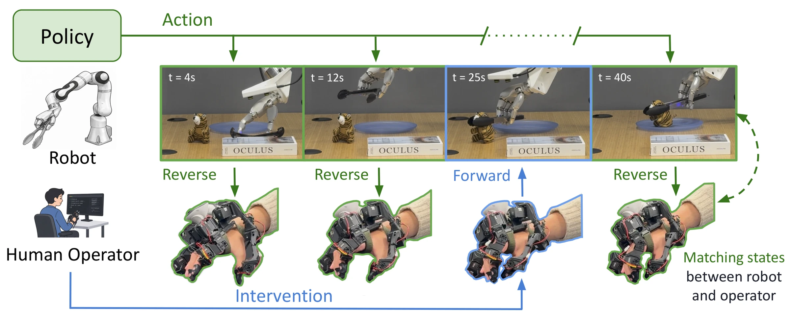

Sharpa Wave
Battery insertion
The robot grasps a battery and inserts it into a holder with a single hand. Insertion compresses a spring contact, requiring force along a specific direction while the grasp is maintained.
Teleoperation supplies both the demonstrations that train manipulation policies and the interventions that correct them during deployment. For dexterous hands, both are limited by interfaces that close the loop through vision alone and that cannot reconcile the operator's hand with the robot's when control is transferred mid-task.
We present DITTO-X, an actuated hand exoskeleton that drives three commercial dexterous hands (Sharpa Wave, Wuji 2 and Inspire) without per-hand redesign. Because it is actuated, DITTO-X works in both directions: in forward teleoperation the operator drives the robot, and in reverse teleoperation the robot drives the operator's fingers to match its own configuration. This enables:
Unedited rollouts of diffusion policies trained on DITTO-X demonstrations, shown at real-time speed (1x).
The robot grasps a battery and inserts it into a holder with a single hand. Insertion compresses a spring contact, requiring force along a specific direction while the grasp is maintained.
The robot grasps a pair of tongs, uses them to pick up a toy, places the toy at a target location and returns the tongs. Because the tool aperture is controlled through sustained grip force, the policy must release the toy without dropping the tongs.
The robot grasps a raspberry and places it in a glass bowl. The raspberry is crushed under modest force, so grip force must be regulated near the lower limit of a stable grasp.
A single episode recruits three grasp types: the middle through little fingers hook the drawer open, the thumb and index finger pinch the cube, and the hand closes the drawer as a fist.
The robot picks up a toy and places it in a basket.
The robot lifts a soft toy with the Inspire hand, which has six actuated degrees of freedom.

DITTO-X is actuated, so it can run in both directions. In forward teleoperation the human drives the robot. In reverse teleoperation the robot drives the human: the policy's commanded hand configuration is projected onto the exoskeleton, which moves the operator's fingers to match. When the grasp needs a correction, the operator takes over from exactly where the robot is, then hands control back.
We deploy a tong-use policy trained on DITTO-X demonstrations and ask subjects to take over once the robot has grasped the tongs, completing the remainder of the task: using the tongs to pick up a toy and placing it at the target location. We compare DITTO-X with MANUS, a commercial hand-tracking glove that provides no feedback and cannot actuate the operator's hand. An episode in which the tool is dropped is counted as a failure, since recovery requires resetting the scene.
DITTO-X · reverse teleoperation
MANUS · baseline, no reverse teleoperation
User study with n = 6 subjects and ten trials per interface. Each trial begins once the policy has grasped the tongs, and episodes in which the tool is dropped are counted as failures. Hovering over a point highlights the same subject in both charts. * S3 had more than 20 hours of prior experience operating the Sharpa hand with MANUS and no prior exposure to DITTO-X.
We show the same comparison on a fragile object, in which the policy grasps a raspberry and the operator takes over to place it in a glass bowl.
DITTO-X · reverse teleoperation
MANUS · baseline, no reverse teleoperation
Complete, unedited episodes from further evaluation runs.
The battery slips from the hand during the policy's approach. The operator takes over, regrasps the battery and seats it in the holder, then returns control, and the policy completes the insertion autonomously.
A second MANUS intervention on the tong task. The operator's hand configuration does not match that of the robot hand at takeover, and the episode fails.
In forward teleoperation, the operator commands the robot hand directly. DITTO-X maps the operator's finger motion to each target hand through a direct joint correspondence where the kinematics permit, and through fingertip retargeting otherwise. Feedback is rendered through two channels: sustained joint-level torque, estimated from the target hand's motor current or tactile sensing, and vibrotactile cues at the fingertips on contact onset.
With their eyes closed, subjects closed the Sharpa hand on an object and identified it from the rendered feedback alone. In the size task, the object was one of three cylinders (30, 50 or 70 mm in diameter); in the compliance task, it was a soft object, a rigid object, or no object. Each subject completed six trials per task under three conditions: full feedback, force feedback only, and vibrotactile feedback only.
n = 6 subjects; chance level is 33.3%. Removing either channel reduces size identification to 61.1%, whereas compliance identification depends primarily on force feedback (80.6% with force only, 47.2% with vibrotactile only).
Subjects collected complete tong-use demonstrations with each interface: grasping a pair of tongs, using them to pick up a toy, and placing the toy at a target location without dropping the tool. Each subject performed ten trials per interface.
n = 6 subjects. DITTO-X yielded a higher success rate than MANUS for all six subjects. * S3 had more than 20 hours of prior experience operating the Sharpa hand with MANUS and no prior exposure to DITTO-X.
Tong-use policies trained on DITTO-X and on MANUS demonstrations, shown side by side and temporally aligned at the moment the tongs reach the toy.
When the tongs contact the toy, the DITTO-X policy maintains a stable grasp on the tool, whereas the grasp of the MANUS policy is displaced by the collision. Over 30 evaluation rollouts, the pretrained policies succeed in 63.3% and 13.3% of trials, respectively.
Interventions collected during deployment can be aggregated to improve the policy (DAgger; Ross et al., 2011). For each task and interface, we ran two rounds of DAgger with 20 intervention trajectories per round. Each round began with a full evaluation of the current policy; the operator then intervened at their discretion during deployment, successful interventions were added to the training set, and the policy was fine-tuned for 10 epochs. All DITTO-X interventions were collected with reverse teleoperation, and each interface supplied interventions only to its own policy.
An evaluation episode in which the bowl lies outside the placements seen during pretraining. The sequence shows the failure of the pretrained policy, interventions with MANUS and with DITTO-X, and a rollout of the policy after DAgger fine-tuning.
Before DAgger · pretrained policy
After DAgger · round 2, DITTO-X corrections
Success rates over 30 evaluation rollouts per policy from paired initial conditions, of which at least 10 lie outside the pretraining distribution of object placements.
DITTO-X policies improve monotonically on all three tasks. MANUS policies improve after the first round and decline after the second on tong and raspberry. We attribute this to the handoff: an intervention that begins from a mismatched hand pose perturbs the grasp before recovering it, and this trajectory becomes a training target.
To separate the effect of iterative correction from that of additional data, we trained a DITTO-X policy on the same number of demonstrations as DAgger round 2 (120 for tong; 100 for raspberry and battery), collected non-iteratively from the original task distribution.
The quantity-matched policy falls short of DAgger on all three tasks and, on battery, does not improve on the pretrained policy (36.7% vs. 40.0%). Additional demonstrations from the original distribution do not cover the states in which the policy fails; corrections collected at those states do.
We release all episodes collected in this work as the DITTO-Human Dataset. The name follows DITTO-X, in which X denotes the hand that DITTO drives: in reverse teleoperation, DITTO drives the human hand, so X = Human. The dataset contains 1,888 episodes, more than 16 hours of trajectories recorded at 30 Hz, across six tasks and three dexterous hands.
Battery insertion, raspberry and tong use on Sharpa Wave; cube in a drawer and toy pick-and-place on Wuji 2; bunny lifting on Inspire. Counts include episodes collected with both DITTO-X and MANUS, and both successful and failed episodes.